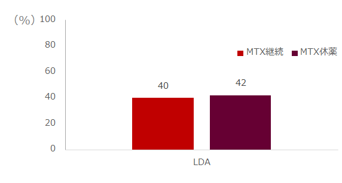

HUM+MTX併用治療後にMTXを休薬した患者でも、MTXを継続した群と低疾患活動性達成率は変わらない
- ●ADA+MTXで少なくとも3か月後MTXを休薬した患者とMTXを継続していた患者で比較
- ●Corrona Registry、プロペンシティスコア（PS）マッチング使用
- ・N=4,511（ADA開始）、ADA+MTXを開始したのは2,160名
- ・そのうち、PSによりMTX休薬群137名、MTX継続していたのは411名
- ・両群の投与前背景は同様
（罹病期間 休薬群8.03年、継続群6.15年、p=0.04） - ・6か月でのΔCDAI、ΔmHAQ等は両群でns
ADA+MTX vs ADA CDAI LDA達成率

MTX併用後、単剤としてADAを継続した患者は疾患活動性及びPROがADA+MTX併用患者と同様であった
TNF阻害薬もMTX併用療法後のMTX休薬のデータはあるが、観察研究であり、
無作為化（RCT）したのACTのCOMPACT Studyとはエビデンスレベルが異なる
Dimitorios A Pappas, et al. ACR2017. #2453